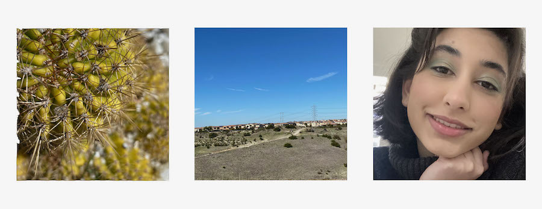
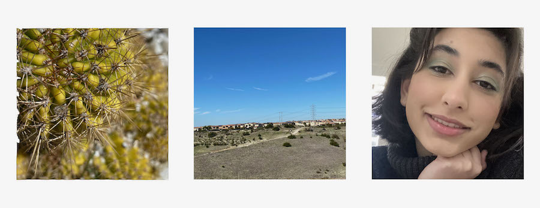

This page is for the photos I've edited using the skills I've learned from J+D Toolkit on February 11th, which are cropping images, changing the resolution of images, changing the width and height of images to certain ratios, and changing the quality of images.
Back to Homepage
These images show a before and after of an overexposed image.

 These images show a before and after of an underexposed image.
This is a banner of a close up image, a wide shot, and a portrait. These images were cropped into squares to fit into the banner.

This is a group photo cropped to a 16:9 ratio with the Journalism + Design logo over the top.
This is an experimental image using the images from before and different photoshop tools.
These images show a before and after of an underexposed image.
This is a banner of a close up image, a wide shot, and a portrait. These images were cropped into squares to fit into the banner.

This is a group photo cropped to a 16:9 ratio with the Journalism + Design logo over the top.
This is an experimental image using the images from before and different photoshop tools.